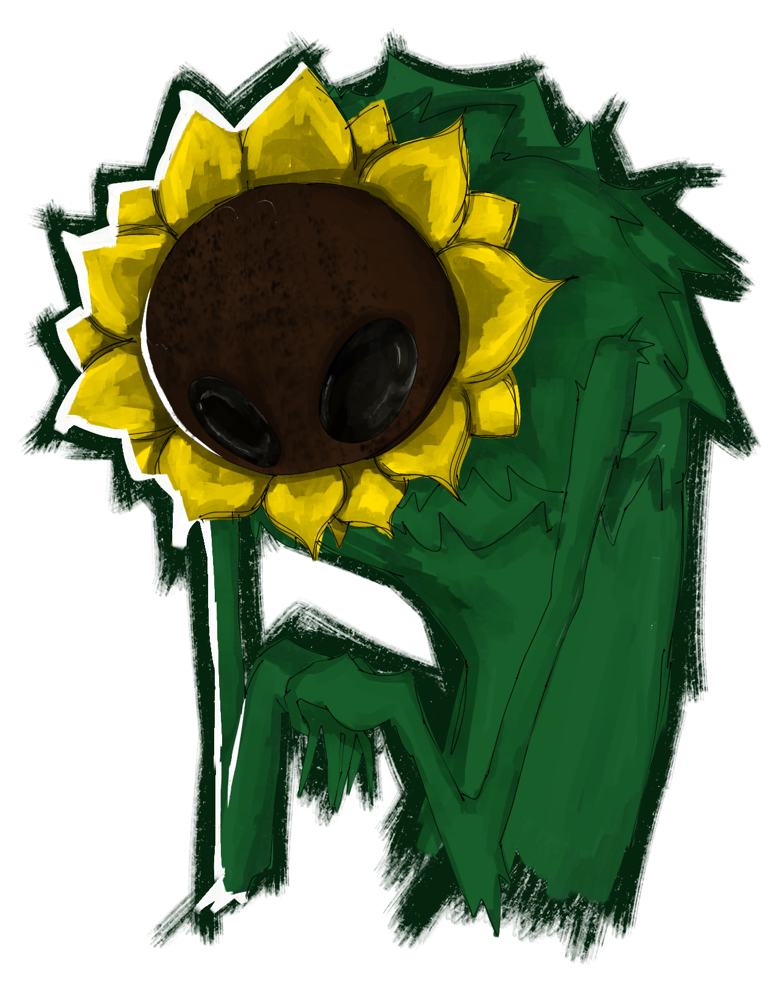
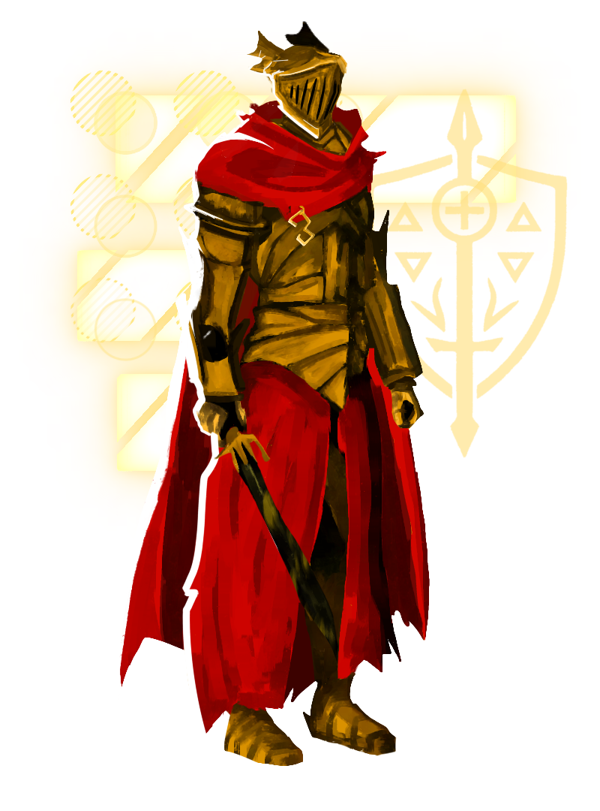

"Wuitalur é um sistema autoral de RPG narrativo com foco em ambientações sombrias, horror cósmico, dilemas morais e escolhas difíceis. Mistura fantasia sombria com toques futuristas e sociais. Seus personagens vivem em um mundo onde religião, magia, tecnologia e corrupção se entrelaçam em conflitos épicos e trágicos. Esta página apresenta todo o sistema, de forma contínua e acessível, para consulta completa de regras, raças, classes e mais."
Atributos
Atributos representam as características essenciais de um personagem em Wuitalur. Eles influenciam testes, combates, resistências e habilidades ao longo da campanha.
Distribuição de Atributos
• Todos os atributos começam sempre com 1 ponto.
• Você tem 6 pontos para distribuir entre os atributos.
• É permitido tirar 1 ponto de um atributo (ficando com 0) para ganhar 1 ponto extra em outro.
• Ganha +2 pontos de atributo a cada 3 níveis.
• Todos os personagens começam com bônus de +3 em Sentidos (SEN).
• O atributo Cosmo é definido em porcentagem (ex: 1%) e só pode ser alterado pelo mestre.
Saúde
A saúde é um dos atributos básicos de um personagem, ele vai definir a saúde tanto física quanto mental.
(Exemplo) Um personagem com saúde baixa (-1) terá desvantagem em todos os testes de saúde que for fazer.
Caso essa saúde seja 0, o personagem terá uma imunidade baixa a doenças. Quando for rolar um teste de resistência a alguma doença, terá desvantagem.
Resistência Mágica (RM)
A resistência mágica significa a força da sua Energia Astral.
(Exemplo): Se um inimigo fizer um ataque mágico contra você, dependendo do ataque, você deve rolar um teste de resistência mágica (1d4 + Modificador de RM).
Resistência Física (RF)
A resistência física define sua resistência corporal.
(Exemplo): Se um inimigo fizer um ataque físico contra você, dependendo do ataque você deverá rolar um teste de RF (1d4 + Modificador de RF).
Destreza
Destreza será usada principalmente para testes de iniciativa, esquiva, acerto e contra-ataques.
(Exemplo): Ao ser alvo de um ataque, você pode realizar um teste de esquiva (1d20 + modificador de Destreza), caso seja possível.
Se o resultado for maior que o acerto do inimigo, a esquiva será bem-sucedida.
Força
A Força define a força física do seu personagem (e a definição de seus músculos).
Testes de FR (1d20 + Mod de FR) serão usados, por exemplo, quando um personagem precisar carregar algo pesado — ele deverá rolar um teste de FR.
Intelecto
O Intelecto define o conhecimento do seu personagem, por exemplo, sobre eletrônicos, comidas, geografia, medicina, etc.
Testes de INT (1d20 + Mod de INT) serão utilizados em momentos que o seu personagem tem que se lembrar de algo.
Fama
A Fama define o quanto seu personagem é conhecido, também define a sua carisma e o quão sua aparência é atrativa.
Testes de FAMA (1d20 + Mod de FAMA) serão usados para Enganação, Sedução, Persuasão, etc.
Sentidos (SEN)
O atributo Sentidos (SEN) define a capacidade do personagem de perceber e compreender o ambiente ao seu redor.
Ele é utilizado em testes de percepção, investigação ou para encontrar algo. Todos os personagens começam com um bônus inicial de +3 nesse atributo.
C̶̪͓͋O̷̗̖̔S̶͔̺̝̑̑̈M̸̤͔͑ͅO̶͓̎͝
C̶̪͓͋O̷̗̖̔S̶͔̺̝̑̑̈M̸̤͔͑ͅO̶͓̎͝ NÃO pode ser modificado pelo jogador.
Ele é definido em porcentagem: (ex: 1%, 5%...)
Representa sua conexão com o além humano e sua estabilidade no mundo carnal e mortal. Todos os personagens começam com 1%. Somente o MESTRE pode alterar este valor.
Raças
Em Wuitalur, as raças representam a origem e a essência de cada personagem. Cada uma delas carrega traços biológicos, culturais e sobrenaturais únicos, influenciando diretamente os atributos, habilidades e a forma como o personagem é percebido no mundo. A escolha da raça é um dos primeiros e mais importantes passos na criação de um personagem.
Akivus
Seres que vivem principalmente na floresta que possuem muita afinidade com a fauna e a flora, são capazes de criar plantas. Possuem chifres longos que se assemelham a de alces com vinhas e flores ao seu redor. A grande maioria tem coloração de pele parda e são geralmente mais altos que humanos (tendo 1,80m ou mais).
Bônus de Raça
- +2 em Saúde
- -1 em Resistência Física
- +2 em Resistência Mágica
- -1 em Força
Fraquezas e Resistências
- Fraqueza: Podridão
- Resistência: Sagrado, Dano Gélido
Habilidades de Raça
- Afinidade com plantas: Capacidade inata de interagir com vegetação ao redor.
- Criação de Vinhas: Cria vinhas que podem ser usadas para amarrar coisas.
< • Ação Padrão • > - Névoa Perfumada: Cria vinhas com flores que soltam pólen com cheiros fortes que podem atordoar algum alvo.
< • Ação Padrão • > - Cheiro do Perigo: O Akivus pode ficar parado durante um tempo para sentir o cheiro de quaisquer possíveis ameaças ao redor dentro de um raio de 8m.
-Passiva- - Regeneração Verde: Quando em contato direto com o solo ou cercado por vegetação, os Akivus podem acelerar sua regeneração natural, curando-se de ferimentos leves em um curto período de tempo. A cada 2 minutos, cura 2d8 de vida.
-Passiva- - Passo Silencioso: Os Akivus conseguem mover-se silenciosamente pela floresta, passando despercebidos por inimigos e evitando armadilhas naturais. Não fazem nenhum barulho ao andar. Se quiserem correr sorrateiramente, devem rolar teste de furtividade.
-Passiva- - Aura de Vitalidade: Em uma área de até 3B ao redor do Akivus, plantas e seres vivos se tornam mais resistentes e vigorosos. Aliados dentro dessa área recebem +2 em Saúde e RF, além de +25 de vida temporária por 2 turnos gerais.
< • Ação Padrão • >
-70 de Energia Astral- (15 PE caso Sobrevivente) - Raízes Constritoras: Invoca raízes do solo para prender um inimigo, esmagando-o lentamente. Usa Ação Bônus. O inimigo deve passar em um teste de RF (CD 18). Enquanto estiver preso, sofre 2d8 de dano por turno.
-100 de Energia Astral- (20 PE caso Sobrevivente) - Explosão Floral: Disponível a partir do nível 10. Cria uma flor especial usada como granada: ao contato, explode em espinhos e pólen tóxico. Atinge todos num raio de 5B, causando 3d15 de dano perfurante e envenenando (teste inimigo de Saúde). Veneno causa 2d8 por turno até o fim da cena.
< • Ação Padrão • >
-100 de Energia Astral-
Vampiros

Seres com aparência humanoide, pele um pouco pálida e dentes caninos maiores. Alimentam-se principalmente de sangue. A maioria possui olhos vermelhos; mulheres tendem a ter corpos mais curvados e homens mais definidos. São naturalmente bonitos e elegantes.
Bônus de Raça
- +3 em Saúde
- +2 em Destreza
- +1 em Resistência Mágica
- +3 em Fama
Fraquezas e Resistências
- Fraqueza: Praga
- Resistência: Pesadelo
Habilidades de Raça
- Visão no Escuro: Enxerga claramente no escuro até 18 metros.
-Passiva- - Mordida Vampírica: Utiliza as presas para morder uma vítima e extrair sangue, restaurando seus próprios pontos de vida. Pode escolher a intensidade da mordida:
- Pouco sangue: 1d12 + Saúde
- Sangue moderado: 1d20 + Saúde
- Muito sangue: 1d30 + Saúde
- Frenesi Sanguíneo: Quando o vampiro estiver com 20% ou menos da vida máxima, entra em frenesi, ganhando ataques adicionais:
- Nível 1–10: 1 ataque adicional
- Nível 11–15: 2 ataques adicionais
- Nível 16–20: 3 ataques adicionais
- 0%–25%: 1 ataque adicional
- 26%–40%: 2 ataques adicionais
- 45%–65%: 3 ataques adicionais
- Vínculo de Sangue: Cria uma ligação com um aliado. Enquanto o vínculo estiver ativo, ambos compartilham 50% do dano e da cura recebidos.
-30 de Energia Astral- (5 PE caso Sobrevivente)
Ação Bônus
Híbridos
São pessoas que, desde a Segunda Grande Guerra e após a Era Dourada, foram modificadas geneticamente pelo governo do reino de Paladium. Com o tempo, se espalharam pelo mundo e passaram a ser considerados uma raça comum. São divididos em duas sub-raças principais: Animalescos e Plantíferos.
Animalescos

Animais antropomórficos ou pessoas com características de animais.
Bônus de Raça
- +3 em Força
- +2 em Destreza
- +2 em Resistência Física
- +2 em Sentidos
- +1 em Intelecto
Fraqueza
- Dano Sonoro
Habilidades
- Percepção Aprimorada: Pode rolar um teste de SEN + 4 para tentar perceber algo interessante ou escondido.
-Passiva- - Quadrúpede: Pode usar uma Ação Bônus para se locomover com todos os membros, ganhando +4 de Destreza e vantagem em testes de esquiva. Enquanto estiver nessa posição, não pode executar ações bônus nem ações completas. Pode ser ativada como Ação Bônus após uma Ação Padrão.
Plantíferos

Plantas humanoides ou pessoas com características de plantas.
Bônus de Raça
- +3 em Saúde
- -2 em Resistência Física
- +1 em Resistência Mágica
- +3 em Intelecto
Fraqueza
- Solar
- Podridão
Habilidades
- Afinidade com Plantas: Pode se comunicar com plantas.
-Passiva- - Criação de Vinhas: Cria vinhas que podem ser usadas para amarrar coisas.
< • Ação Padrão • > - Névoa Perfumada: Cria vinhas com flores que soltam pólen atordoante. O alvo deve fazer teste de RM com CD 18.
< • Ação Padrão • > - Canção das Árvores: A partir do nível 3, pode ouvir as batidas das árvores e manipular madeira ao redor.
-Passiva- - Nível 3 – Punhos Rítmicos: Ativa punhos de madeira sincronizados ao BPM. Ganha 25 de PV temporária na ativação. Rola 1d30 ÷ 2 = X, e então rola 3dX de dano. Ex: 1d30 = 10 → 3d5 de dano por ataque. A habilidade continua ativa até o fim do combate.
-Passiva- - Nível 13: O dado base passa a ser 1d40, aumentando o dano dos punhos.
- Nível 10 – Ritmo de Animação: Cria dois tambores e os toca, gerando uma área de 4 blocos com notas Astrais douradas. Todos os aliados na área recebem:
Status< • Ação Padrão • >Escudo de 25 de PV temporária
+2 em testes de esquiva
Dragão Anão
Originários do pequeno e hostil continente de Tragnor, os Dragões Anões são seres dracônicos de baixa estatura, variando entre 1,00m e 1,45m de altura. Apesar do porte diminuto, possuem corpos resistentes recobertos por escamas de cores diversas, que vão de tons vibrantes a metálicos e opacos. Sua fisionomia é um híbrido elegante entre dragão e humanoide, com chifres curvos, cauda longa e ágil, e quatro antenas peludas com cerdas sensoriais na parte de trás da cabeça.
Essas antenas permitem uma forma única de comunicação telepática rudimentar, transmitindo emoções, impressões ou imagens simples para outros Dragões Anões ou criaturas empáticas.
Grande parte da população de Tragnor vive em comunidades tribais espalhadas pelas florestas, cavernas ou planícies íngremes do continente. Essas comunidades, embora vistas por forasteiros como “primitivas”, mantêm uma estrutura social sofisticada, marcada por rituais de caça, danças cerimoniais e profundo respeito aos ancestrais dracônicos. Sua cultura é preservada por meio de um idioma próprio, chamado Idioma Antigo, um sistema de escrita e fala exclusivo da raça, repleto de símbolos e entonações que carregam significados complexos e muitas vezes impossíveis de traduzir completamente.
Devido à instabilidade de Tragnor, muitos Dragões Anões migraram para o continente principal, Wuitalur, formando pequenos grupos nômades ou comunidades ocultas. Mesmo longe de sua terra natal, preservam o Idioma Antigo como forma de manter viva a conexão com suas raízes.
Bônus de Raça
- +2 em Destreza
- +1 em Inteligência
- -1 em Força
- -1 em Saúde
Resistência Elemental
- Escolha: Solar, Estase ou Ácido
Outros
- Mente Focada: vantagem em testes para resistir a efeitos de confusão ou controle mental
Habilidades de Raça
- Sopro Ancestral: Expele um cone de energia elemental correspondente à sua resistência (Fogo e Solar, Estase ou Ácido) em um raio de 3B à sua frente.
Inimigos na área devem rolar um teste de Destreza (CD 15) ou sofrer 3d10 de dano elemental.
-Sem custo- - Conexão Sensorial: As quatro antenas permitem comunicação telepática limitada com criaturas a até 10B, transmitindo emoções, intenções simples ou imagens mentais.
-Passiva- - Improvisador Nascido: Você pode gastar uma ação bônus para ativar uma engenhoca improvisada (com aval do mestre), criando distrações, faíscas, fumaça ou destrancando mecanismos frágeis.
Essa habilidade só pode ser usada 2 vezes e é recuperada após um descanso curto ou longo. - Instinto de Sobrevivência: Vantagem em testes de Sobrevivência e Navegação em ambientes como: florestas densas, zonas instáveis ou ruínas perigosas.
- Camuflagem Natural: Recebe +2 em testes de Furtividade
- Ataque Escondido: Se estiver escondido ou invisível para o inimigo, causa +1dDesx2 de dano extra em um ataque corpo a corpo ou à distância.
Humanos
Os humanos são seres abundantes e resilientes, adaptados a diferentes ambientes do mundo.
Embora não possuam habilidades inatas extraordinárias, compensam com uma notável capacidade de aprendizado, versatilidade e inovação.
São conhecidos por sua prosperidade e por formar sociedades diversificadas, que vão de pequenas comunidades a grandes impérios.
Bônus de Raça
- +2 em todos os Atributos
- -1 em Resistência Mágica
- +2 em Intelecto
- Fraqueza a dano de Pesadelo
Habilidades de Raça
- Determinação Implacável: Com um teste de Saúde (CD 15), após cair, pode continuar lutando até receber um número de ataques igual à metade do bônus de proficiência (arredondado para cima).
-Passiva- - Adaptação Humana: Quando estiver com menos de 25% do HP, recebe +2 em Força e Destreza até o fim da cena.
-Passiva- - Aprendizado Rápido: Pode observar e copiar habilidades de outros, desde que tenha capacidade física e mental para executá-las. A habilidade copiada deve ser presenciada durante combate ou interação.
-Passiva- - Força de Vontade: Uma vez por descanso longo, ao falhar em um teste de resistência, pode refazê-lo com +3 de bônus.
-Ação Reação- - Inovação: Ao criar itens, armas ou estratégias, pode gastar o dobro do tempo para aprimorá-los, ganhando +2 no teste correspondente. Em combate, isso consome 2 Ações Padrões.
-Passiva- - Resiliência Humana: No início de cada turno, pode realizar um teste de Saúde (CD 14) para remover uma condição negativa (envenenamento, atordoamento, paralisia, etc).
-Passiva- - Força Interior: Em situações de perigo extremo ou emoção intensa, pode ganhar +2 temporário em qualquer atributo (exceto RM) até o fim da cena. 1 vez por descanso longo.
-Ação Bônus-
Praguentos

Seres que personificam a zombaria da vida.
Condenados pela Podridão a renascer como pálidas cópias do que foram, cobertos por lodo negro e viscoso, com a aparência deformada de uma lauma esquecida, com o rosto coberto de olhos alaranjados.
Fazem parte de uma mente coletiva distorcida — ouvem, sentem, mas tudo em ruídos, como ecos de uma existência que não deveria mais ser.
Bônus de Raça
- +2 em Destreza
- +3 em Resistência Mágica
- +2 em Resistência Física
Fraquezas e Resistências
- Fraqueza: Dano Gélido, Solar/Fogo
- Resistência: Praga
- Imunidade: Podridão
Habilidades de Raça
- Manipulação do Lodo Corporal: Os Praguentos podem manipular o lodo de seus corpos de forma criativa. Possuem um limite de Energia de Lodo que aumenta com o nível:
- Nível 1: 180
- Nível 6: 240
- Nível 12: 280
- Nível 18: 320
- Nível 20: 400
- Recuperação Rápida: Regenera automaticamente 10 de Energia de Lodo por turno. Se esgotar a energia, sofre -1 em todos os testes envolvendo Destreza e Intelecto até descansar.
-Passiva- - Criação de Itens: Usa a Energia de Lodo para criar utensílios, armas ou ataques.
- Pequeno: 5 de Energia de Lodo
- Médio: 30 de Energia de Lodo
- Grande: 90 de Energia de Lodo
- Muito Grande: 150 de Energia de Lodo
- Armas de Lodo: Pode criar Espada, Martelo, Foice ou Machado acoplados ao corpo. Duração: 3 rodadas. Dano: 2d12 + Destreza (Físico)
-Ação Bônus- - Tiro Lamacento: Dispara até 5 projéteis de lodo em um turno, causando 2d10 + Destreza de dano de Podridão. Consome 5 de Energia de Lodo por tiro.
< • Ação Padrão • > - Corpo de Lodo: Transforma o corpo em lodo puro por até 2 turnos, tornando-se imune a dano físico. Durante o efeito, não pode atacar, mas pode se mover livremente por fendas e buracos. Consome 50 de Energia de Lodo. Recarga: 1 vez por descanso curto ou longo.
< • Ação Padrão • >
Insectóides

Insectóides são herança viva dos experimentos da Era Dourada — humanos, principalmente crianças pobres, fundidas a traços de insetos como mariposas, formigas e moscas.
Tentativa falha de Paladium de fazer humanos insetos. Carregam exoesqueletos, olhos que não piscam e membros estranhos, junto de uma natureza fria, calculista e, para muitos, cruel por instinto.
Mesmo organizados em colônias e comunidades, raramente demonstram empatia genuína: negociam, convivem e cooperam por necessidade, não por afeto. Para o resto do mundo, continuam sendo lembrados como um povo de coração gelado, moldado para sobreviver — não para sentir.
Bônus de Raça
- +3 em Destreza
- +2 em Resistência Mágica
- +1 em Intelecto
- -5 em FAMA
- Proficiência natural em testes de Intimidação
- Sensibilidade a luzes fortes
- Fraqueza a dano Solar e Gélido
Habilidades Básicas
- Voo: (Dependente do inseto de origem)
- Visão no Escuro
Vínculo Elemental
Os Insectóides podem escolher um vínculo com 1 elemento à sua escolha. As opções são: Podridão, Nulídrico, Pesadelo, Sombra.
Para cada vínculo escolhido, o Insectóide ganha 2 habilidades específicas:
Podridão
- Sentido Putrefato: Consegue sentir qualquer criatura feita de podridão a 6 blocos de distância.
-Passiva- - Engula Lodo: Pode agarrar um alvo a 2 blocos e fazer ele engolir lodo, causando 2d15 de dano e paralisia por 1 rodada. Alvo pode tentar esquiva com Destreza. (Liberada no nível 7)
< • Ação Padrão • >
Nulídrico
- Vórtice sem fim: Cria uma esfera flutuante que suga ar e enfraquece até 3 alvos (–2 em dados de esquiva). Alcance de 4 blocos. (Liberada no nível 7)
< • Ação Padrão • > - Sacrifício de Vida: Usa 35% da vida total para criar 2 armas que causam dano adicional com base em 50% da vida do Insectóide.
< • Ação Padrão • >
Pesadelo
- Lembre-se: Causa 2d10 de dano mental e paralisa o alvo ao invocar visões horríveis. Alcance: 5 blocos.
< • Ação Padrão • > - Ilusão Amedrontadora: Cria uma ilusão visível apenas para o alvo. Se falhar no teste de RM, ficará paralisado por 1 rodada.
< • Ação Padrão • >
Sombra
- Medo: Com Ação Bônus, sussurra palavras de medo. Se o alvo falhar em INT (CD 16), sofre 4d12 de dano. (Liberada no nível 10)
- Toque da Maldade: Atordoa o alvo e faz ouvir vozes. Alvo deve passar em um teste de RM.
< • Ação Padrão • >
E.X.Os
Uma espécie criada pelos engenheiros mais habilidosos de Paladium, feita para serem um sistema de proteção e segurança da cidade ou até de utilidade doméstica.
Possuem características robóticas e são feitos de um metal especial. Alguns conseguem ter sentimentos próprios e desenvolver seus corações por razões ainda não compreendidas.
O coração dos E.X.Os é energizado por Everact. Caso o minério perca energia, o E.X.O é desligado automaticamente.
Bônus de Raça
- +1 em Resistência Mágica
- +3 em Intelecto
- +1 em FAMA
- +1 em Resistência Física
- +3 em Força
Fraquezas e Resistências
- Imunidades: Fogo, Praga
- Fraquezas: Podridão, Água (se estiver molhado, perde –1 em Destreza até secar)
Habilidades de Raça
- Consertos: É capaz de consertar qualquer coisa que tenha conhecimento técnico suficiente.
-Passiva-
Modelo de Fábrica
O jogador deve escolher um entre os três modelos disponíveis:
Doméstico
Robôs mais frágeis e sensíveis, feitos com materiais leves como vidro e partes flutuantes:
- +4 em Destreza
- Proficiência em testes de Esquiva
- –5 em Resistência Física
Guerra
Feitos com materiais resistentes, fortes e parrudos, sempre à frente do combate:
- +1 em Força
- +2 em Resistência Física e Mágica
- –3 em Destreza
Segurança
Projetados para proteger figuras importantes como os ricos de Paladium:
- +2 em Resistência Mágica
- +3 em Resistência Física
- +1 em Intelecto
Habilidades Especiais
- Ponto Fraco: O E.X.O pode rolar um teste de INT. Se tirar 20, descobre o ponto fraco de um inimigo. Ao acertar esse ponto, o ataque recebe +4d15 de dano adicional. Esse valor pode ser reduzido até 18 através de modificações nos olhos do E.X.O feitas por ferreiros ou artefatos.
< • Ação Padrão • > - Agarrão: O E.X.O pode tentar imobilizar um inimigo. Ambos rolam: Alvo (Destreza) vs E.X.O (Força). Se o inimigo perder, ficará imobilizado até passar em um novo teste de Força.
< • Ação Padrão • >
Abissais
Os Abissais são uma raça originária das profundezas. Vivem em grandes colônias, são ágeis e frágeis, mas também misteriosos. Com olhos sem íris ou pupilas, veem claramente no escuro. Sua pele é sem vida, pálida e marcada por veias escuras que percorrem o corpo.
Bônus de Raça
- -1 em Saúde
- +3 em Destreza
- +1 em Resistência Física
- +2 em Intelecto
- Desvantagem em testes de percepção em locais com luz forte
Fraquezas e Resistências
- Imunidade: Praga
- Fraqueza: Podridão
- Resistência: Solar, Dano Gélido, Pesadelo
Habilidades de Raça
- Visão no Escuro: Enxerga perfeitamente no escuro, mesmo sem fontes de luz.
- Luz Amiga: Pode liberar uma bioluminescência suave pelas veias, iluminando o ambiente ao redor.
- Pressentimento: Rola 1d20 para detectar emboscadas nas proximidades (CD definida pelo mestre).
- Telepatia: Consegue se comunicar mentalmente com outros Abissais próximos.
- Confusão: Usa a telepatia para induzir confusão em um inimigo. Realiza-se um teste de Intelecto contra Intelecto. Se vencer, o inimigo fica confuso por 1 turno.
- A Fome de Vinhas: Abissais consomem vinhas corrompidas pela Praga para gerar efeitos instáveis. O jogador pode consumir 1 vinha e rolar 1d7:
- 7: +2 em Destreza
- 6: +2 em RF
- 5: +1 em SEN
- 4: +2 em Saúde
- 3: -3 em Saúde
- 2: -2 em Destreza
- 1: -4 em RM
ESPECTR◊S
Seres etéreos vindos de uma dimensão paralela, com corpos translúcidos e olhos brilhantes. Os Espectr◊s estão em constante conexão com sua dimensão de origem, o que lhes dá p◊deres únicos, mas os torna vulneráveis.
⚠ AVISO IMPORTANTE ⚠
Essa Raça é PROPOSITALMENTE injusta e EXTREMAMENTE difícil de jogar, esteja ciente disso.
Bônus de Raça
- Naturalmente -5 em Saúde
- Naturalmente +3 em Destreza
- Nat◊ralmente +1 em Resistência Mágica
- Na◊turalmente -2 em Força
- Naturalmente -1 em Intelecto
- Naturalmente +3 em Resistência Física
- Desvantagem em interações sociais com raças não-espectrais
Fraquezas e Resistências
- Imunidade: Pesadelo e Sombra
- Resistência: Dano Físico
- Fraque◊za: Dano Sagrado e Solar
Mecânica de EXISTÊNCIA
Os Espectros não possuem "vida" tradicional, mas sim Existência, que representa sua estabilidade no mundo físico.
- Existência Inicial: 3d8 no nível 1. Aumenta em +1d8 a◊ cada nível.
REGENERAÇÃO
- Escuridão profunda: 1d4 p◊r rodada
- Descanso longo: 2d8 pontos restaurados
- Absorção de Medo: 1d4 por rodada próximo a uma criatura amedrontada
FRAQUEZAS
- Dano Sagrado e Solar: causam o dobro de redução na Existência
- Em locais iluminados: -2 em testes de Destreza e ataques
- Luz solar direta: causa 1d6 de dano por rodada
Instabilidade Etérea
Abaixo de 10% da Existência total, precisa passar em um teste de Resistência Mágica (CD 15) por rodada, ou perde 1d4 pontos extras.
Habilidades de Raça
- Incorporação: Pode atravessar paredes e objetos sólidos
-Passiva- - Visão Espectral: Detecta criaturas invisíveis e presenças etéreas em um raio de 30B
-Passiva- - Toque Fantasmagórico: Causa 1d8 + Destreza de dano de Sombra. Alvos que falham em um teste de Resistência Mágica (CD 15) ficam paralisados por 1 rodada
< • Ação Padrão • > - Forma Sombria: Transforma-se em sombra por 3 rodadas, ficando imune a qualquer fonte de dano, mas incapaz de lançar magias (1 descanso longo para recarregar)
< • Ação Padrão • > - Absorção de Medo: Recupera 1d4 pontos de Existência por rodada ao estar próximo de uma criatura terrorizada
-Passiva-
Origens
Ao criar um personagem para o RPG Wuitalur, os jogadores podem escolher uma origem que representa a base de suas experiências, influenciando suas perícias, habilidades e história pessoal. Cada origem concede perícias adicionais, itens únicos e poderes específicos.
Filho do Abismo
Crescido nas profundezas ocultas abaixo da superfície, você sobreviveu em ambientes hostis onde a escuridão e a corrupção dominam. Sua afinidade com as sombras moldou suas habilidades.
Perícias:
Percepção, Intimidação
Ferramentas:
Nenhuma
Idiomas:
Padrão e Abissal
Equipamento:
Um colar bioluminescente, um manto preto resistente e uma bolsa com 10 Moedas de Prata
Poder:
Olhos do Abismo — Você enxerga perfeitamente em escuridão total (até 18B).
Traço:
Intuição Sombria — Sempre que estiver em um ambiente hostil ou desconhecido, você tem vantagem em testes de Sentidos para detectar emboscadas.
Guardião da Floresta
Habituado à vida entre árvores e criaturas selvagens, você é um com a natureza.
Perícias:
Furtividade, Sobrevivência
Ferramentas:
Kit de herbalismo
Idiomas:
Florestal e Padrão
Equipamento:
Um amuleto feito de madeira antiga, uma pequena bolsa com sementes raras e 15 Moedas de Prata
Poder:
Vinhas Protetoras — Como ação bônus, pode criar vinhas que impedem o movimento de um inimigo por 1 turno.
Traço:
Conexão Verdejante — Você pode detectar perigos naturais, como terrenos instáveis ou criaturas camufladas.
Herdeiro de Paladium
Você vem de uma linhagem influente em Paladium, onde a disciplina, o treinamento militar e a liderança são valores fundamentais.
Perícias:
Persuasão, História
Ferramentas:
Uma ferramenta de escolha (arma branca ou instrumento musical)
Idiomas:
Padrão e um idioma a sua escolha
Equipamento:
Um símbolo familiar, uma roupa nobre simples, uma bolsa com 5 Moedas Negras
Poder:
Voz Inspiradora — Como ação bônus, você pode conceder +1 em um teste a sua escolha de um aliado.
Traço:
Nobre Presença — Quando falar com figuras de autoridade, você tem vantagem em testes de Persuasão.
Experimento falho da Era Dourada
(Não é possível usar essa origem com a raça: Híbridos)
Você é um descendente direto ou uma das cobaias sobreviventes dos experimentos secretos conduzidos em Paladium durante a Era Dourada. Mesmo após a fuga e adaptação dessas raças à sociedade, vestígios dessa época sombria ainda moldam sua existência.
Perícias:
Cosmo, Furtividade
Ferramentas:
Kit de Ferramentas Médicas
Idiomas:
Padrão
Equipamento:
Um símbolo gravado com um código de identificação em seu corpo, um frasco de medicamento experimental
Poder:
Instinto de Sobrevivência — Quando reduzido a 5 PV ou menos, você ganha +4 PV e +2 RF até o fim da cena (uma vez por descanso longo)
Traço:
Marca da Fuga — Você tem vantagem em testes de resistência contra condições que causem paralisia ou efeitos mentais.
Descendente Croma
Os membros desse clã raro da Floresta Negra possuem olhos com reflexos prismáticos em vermelho e azul que intensificam suas capacidades à beira da morte.
Perícias:
Intimidação, Sobrevivência
Ferramentas:
Nenhuma
Idiomas:
Padrão e Prisma
Equipamento:
Arma branca a sua escolha, um manto marcado com símbolos antigos do clã, um pingente cristalino e 5 Moedas de Prata
Poder:
Último Reflexo — Quando seus PV caem abaixo de 25%, você ganha +2 em Força, Destreza e Resistência Física até o fim da cena.
Traço:
Instinto Prismático — Vantagem em testes de resistência contra efeitos de medo enquanto estiver com 25% dos PV.
Descendente Floralis
Este clã misterioso da Floresta Negra é marcado por olhos heterocromáticos (rosa e verde), que concedem aos seus membros capacidades físicas superiores. Eles são famosos por sua agilidade e vitalidade excepcionais.
Perícias:
Atletismo, Acrobacia
Ferramentas:
Kit de escalada
Idiomas:
Padrão e Floralis
Equipamento:
Um cinto de couro reforçado com marcas do clã, um cantil floral especial e 8 Moedas de Prata
Poder:
Surto Corporal — Uma vez por cena, você pode ganhar +2 em Destreza e dobrar seu deslocamento por 1 turno.
Traço:
Vitalidade Eterna — Vantagem em testes de resistência contra exaustão.
Mercenário
Você trabalhou como mercenário, aceitando trabalhos de todos os tipos, desde caçar monstros até proteger caravanas. Sua experiência em combate e negociação o tornou um prático e pragmático.
Perícias:
Intimidação, Atletismo
Ferramentas:
Kit a sua escolha
Idiomas:
Padrão
Equipamento:
Uma arma branca a sua escolha, um escudo pequeno, um saco de dormir e 3 Moedas de Ouro
Poder:
Adaptabilidade em Combate — Você pode transformar sua Ação Bónus em uma segunda Ação Padrão para atacar.
Traço:
Líder de Batalha — Você pode conceder vantagem em um teste de ataque de um aliado uma vez por descanso curto.
Camponês
Crescendo em uma pequena aldeia, você sempre trabalhou na terra e cuidou dos animais. Sua vida simples o ensinou a valorizar o esforço físico e a natureza ao seu redor.
Perícias:
Sobrevivência, História
Ferramentas:
Nenhuma
Idiomas:
Padrão e o idioma da sua aldeia (caso tenha um)
Equipamento:
Uma enxada, um saco com sementes e 5 Moedas de Prata
Poder:
Mestre da Terra — Em um descanso você pode realizar uma colheita de plantas ou caçar por alimentos de forma mais eficiente, garantindo o dobro de recursos que podem conceder bônus.
Traço:
Força Natural — Você consegue carregar +3 da sua carga normal.
Nerd
Crescendo em uma época onde a magia e a tecnologia primitiva se entrelaçam, você dedicou sua vida a estudar os computadores feitos de pedra de Everact, artefatos que combinam magia antiga com a engenharia rudimentar. Esses sistemas, embora arcaicos, têm uma complexidade que desafia até as mentes mais brilhantes. Sua habilidade em manipular e entender esses dispositivos mágicos o torna um verdadeiro prodígio.
Perícias:
Cosmo, Investigação
Ferramentas:
Nenhuma
Idiomas:
Padrão
Equipamento:
Um cristal de Everact carregado, um dispositivo de interação com pedras de Everact e 10 Moedas de Prata
Poder:
Manipulação de Runas — Você pode ativar ou desativar sistemas de pedra de Everact com facilidade, tendo vantagem em testes para explorar, consertar ou reprogramar esses dispositivos.
Traço:
Conexão Arcana com a Pedra — Você tem vantagem em testes de Cosmo e Investigação relacionados a máquinas feitas de Everact, sendo capaz de discernir seus padrões e operações mágicas com precisão.
Herdeiro da Forja
Você nasceu em uma família de ferreiros, artesãos ou engenheiros, e sua vida sempre esteve entre martelos, fornalhas e metal. A habilidade de moldar materiais e criar armas e armaduras excepcionais faz parte de quem você é. Mesmo quando não está forjando, você sente a necessidade de transformar e melhorar o mundo ao seu redor, seja com ferros ou invenções criativas.
Perícias:
História e Forja
Ferramentas:
Kit de ferreiro
Idiomas:
Padrão e um a sua escolha
Equipamento:
Um martelo de ferreiro, uma espada simples e 15 peças de prata
Poder:
Forja Rápida — Você pode forjar ou reparar um item simples, economizando tempo e recursos.
Traço:
Toque de Ferro — Você tem vantagem em testes de forja para criar ou modificar qualquer item, mudando seus atributos e efeitos.
Morador da Cidade Inexistente
Você nasceu e cresceu em Cirus, uma cidade que existiu fora do tempo e da lógica, onde a tecnologia superava qualquer outra, deixando o resto do mundo em um ponto remoto no passado. Cirus foi guardada por um portão que, um dia, simplesmente desapareceu, deixando para trás apenas fragmentos daquilo que foi. Aqueles que conseguiram sair de Cirus não se lembram de como nem o porquê, e as memórias dessa cidade se tornaram nebulosas, como um sonho esquecido. Você é um dos poucos que ainda carrega vestígios daquela cidade perdida, mas seus próprios pensamentos podem estar sendo apagados com o tempo.
Perícias:
Cosmo, Percepção e História
Ferramentas:
Um dispositivo tecnológico de Cirus (como um gerador de energia ou uma pequena tela holográfica)
Idiomas:
Padrão, Idioma de Cirus (uma língua codificada)
Equipamento:
Um fragmento V3RM3X, e um Equipamento Antigo a sua escolha
Poder:
Memória Desvanecente — Você pode compreender e manipular tecnologias incomuns usando um teste de Cosmo, Percepção ou História com vantagem.
Traço:
Voz do Vazio — Você tem vantagem em testes de resistência contra dano mental.
Médico
Você dedicou grande parte da sua vida à medicina, lutando sempre para salvar seus pacientes da vida e da morte.
Perícias:
Medicina e Alquimia
Ferramentas:
Kit de medicina e kit de alquimia
Idiomas:
Padrão, porém entende jargões médicos
Equipamento:
Kit médico, ervas medicinais e um kit de alquimia, incluindo 2 poções iniciais a escolha do médico.
Poder:
O Salvador — Você pode quando um aliado cair, fazer todos os testes de medicina com vantagem, além dos testes de morte terem a CD reduzida em 1d6 quando você estiver cuidando do seu paciente.
Traço:
Socorrista Nato — Pode gastar o dobro do seu deslocamento para chegar a um personagem que acabou de ser ferido, além disso pode rolar um teste de medicina CD 18 uma vez por turno pra curar 25 de vida instantânea do alvo ferido.
Guaraciense
Você nasceu no arquipélago de Monã, mais especificamente na ilha de Guaraci, você viveu toda sua vida em um mundo totalmente diferente, com outros valores, invenções e moralidade totalmente diferente.
Perícias:
Intimidação, Diplomacia e Engenharia
Ferramentas:
Kit de ferramentas à sua escolha e 5 plantas à sua escolha.
Idiomas:
Guaracês, Padrão e +2 a sua escolha
Equipamento:
Casaco feito de folhas, arma a sua escolha e uma máscara.
Poder:
Guerreiro da Natureza — Ao estar perto de qualquer tipo de planta, recebe apoio da natureza, ganhando +2 em testes durante o combate.
Traço:
Ciência Sustentável — Suas armas e itens podem ser modificados com algumas plantas e elementos da natureza, acertar com o mestre os efeitos dos itens.
Realeza Vampírica
Você nasceu em uma antiga dinastia vampírica, descendente direto de nobres vampiros antigos. A política e o sangue moldaram sua existência, e você aprendeu desde cedo a manipular o poder com sutileza e imponência.
Perícias:
Persuasão, História e Intimidação
Ferramentas:
Kit de alquimia e colar de sua família
Idiomas:
Padrão, Vampírico Real e +1 idioma à sua escolha
Equipamento:
Vestes nobres refinadas, uma arma elegante (Armas de Peso I) e um anel simbólico de sua linhagem
Poder:
Sangue Ancestral — Uma vez por combate, ao sofrer dano, você pode absorver a força vital do inimigo, recuperando PV igual a metade do dano infligido do seu próximo ataque.
Traço:
Nobreza Sombria — Você tem vantagens em testes de Persuasão, Atuação e Intimidação.
Medroso
Você ainda é uma pessoa comum, você ainda tem medo do desconhecido e das monstruosidades que este mundo mágico tem a oferecer.
Perícias:
Disparada e Furtividade
Ferramentas:
Nenhuma
Idiomas:
Padrão
Equipamento:
Itens adequados às suas ocupações
Poder:
CORRA! — Durante uma cena de perseguição ou combate, ao sofrer dano pode gastar sua reação para dobrar seu movimento para longe do oponente, não ficando suscetível a golpes de oportunidade.
Traço:
Adaptação — A cada dano de sanidade que você sofre, você fica mais forte, você começa a aprender e se acostumar, quando sofrer dano de sanidade você recebe resistência de 1, no próximo dano resistência de 2 e assim sucessivamente.
Celebridade
Você é uma pessoa muito famosa e reconhecida socialmente, sendo bastante convincente e amada pelas pessoas ao seu redor.
Perícias:
Liderança, Barganha, mais uma relacionada ao motivo de sua fama
Ferramentas:
Nenhuma
Idiomas:
Padrão
Equipamento:
Itens adequados às suas ocupações e 1 Moeda Negra
Poder:
Personalidade Inspiradora — Pode em situações difíceis inspirar seus aliados, os fazendo receber um bônus igual ao seu modificador de proficiência em seus testes.
Traço:
Carteirada — Pode dar uma Carteirada com sua fama nas pessoas, recebendo vantagem em testes de barganha, intimidação e etc.
Ciborgue
Seu corpo é modificado mecanicamente, te concedendo habilidades devida suas partes robóticas.
Perícias:
Engenharia e Forja
Ferramentas:
Ferramentas de forja e engenharia
Idiomas:
Padrão e +1 a sua escolha
Equipamento:
Partes de metal e um martelo de forja
Poder:
Homem de Ferro — Pode modificar alguma parte do seu corpo para transformá-lo em metálico ou armas, acertando com o mestre as modificações, inicialmente pode ter duas.
Traço:
Homem Bomba — Pode se desfazer das suas partes tecnológicas, explodindo elas em cima dos seus alvos ao estarem danificadas ou para se salvar, elas causam o dado de dano da subclasse + 6d6 de dano
Monstro do Mar
Você viveu anos e anos no mar, lutando, vivendo e guerreando nele, tendo já visto inúmeras bizarrices e sendo afetado por parte delas.
Perícias:
Navegação, Astronomia e Natação
Ferramentas:
Ferramentas de Localização
Idiomas:
Padrão e +2 a sua escolha de suas viagens pelo mundo
Equipamento:
Ferramentas de localização, arma de sua escolha, podendo ser de fogo também
Poder:
Senhor das Águas — Pode controlar água a vontade, como ataques e etc, os ataques causam dano igual ao dano de subclasse. Pode também fazer ondas e etc.
Traço:
Bombeamento — Pode usar a água para aumentar o nível de sangue e bombear com mais força seus músculos, recebendo proficiência a mais de força em cenas de combate.
INSANO
Você sempre teve seus problemas mentais e desde então você tem ficado cada vez mais insano, porém essa loucura e desapego te deixam mais fortes do que nunca, como se fosse uma maldição te consumindo
Perícias:
2 a sua escolha
Ferramentas:
Nenhuma
Idiomas:
Não fala nem sequer 1 idioma perfeitamente.
Equipamento:
Nenhum
Poder:
Doente Mental — Você já começa o RPG com 0 de sanidade e um traço de loucura, a cada dano de sanidade que você sofre você adquire mais um problema mental, porém ganha também +2 em acertos e 1 ação adicional.
Traço:
Insanidade — Você é um caso de estudo, uma aberração. quando você cai a 0 pontos de vida é como se nada fizesse sentido e você fosse trazido de volta pela loucura, você volta com metade dos seus Hp na primeira queda, na segunda com metade da metade e não existe uma terceira, além disso cada vez que você retornar você causa um dano de sanidade a todo mundo.
Classes
Em Wuitalur, as classes representam diferentes tipos de habilidades e estilos de combate que os jogadores podem escolher ao criar seu personagem. Cada classe oferece uma abordagem única para o jogo, permitindo que o jogador experimente diversas formas de interagir com o mundo. Algumas classes são mais focadas em ataques rápidos e furtivos, enquanto outras podem ser especialistas em resistir a danos ou em habilidades mágicas. A classe escolhida determinará como o personagem evolui, que habilidades ele desbloqueia, e como ele se comporta nas batalhas e nas situações do jogo.
Importante:
À medida que uma classe sobe de nível, o jogador tem a oportunidade de aprimorar suas habilidades. A cada novo nível em que uma classe desbloqueia habilidades, o jogador deve escolher UMA entre duas opções diferentes, cada uma oferecendo um caminho único para o desenvolvimento do personagem. (Essa mecânica não está aplicada para todas as classes ainda). Essa mecânica de escolha permite que cada jornada seja personalizada, proporcionando uma experiência única e estratégica para o jogador, já que a escolha de uma habilidade pode impactar diretamente a forma como o personagem interage com o mundo e enfrenta os desafios do jogo.
Cavaleiros de Paladium

Os Cavaleiros de Paladium são a força máxima de imposição, obediência e controle do reino de Paladium, conhecidos por sua devoção cega ao Deus Solar, Cadamor, e por sua brutalidade revestida de santidade. São escolhidos a dedo entre os guerreiros mais disciplinados, leais e impiedosos, moldados desde cedo para servir como instrumentos vivos da vontade solar.
Todos os Cavaleiros de Paladium são vinculados exclusivamente ao elemento Solar, canalizando a luz não como símbolo de esperança, mas como uma chama julgadora que consome o impuro, o desobediente e o indigno. Seus corpos são marcados por rituais sagrados e seu treinamento é implacável, extirpando qualquer traço de compaixão ou hesitação.
Organizados em uma rígida hierarquia de Ranks (1 a 5), sua autoridade cresce conforme demonstram maior zelo, poder e fanatismo. Os de Rank 1 são considerados quase santos, vistos pelo povo como avatares da justiça solar — embora essa justiça raramente seja justa.
Não são meros soldados: são executores, inquisidores e juízes. Suas armaduras resplandecem como faróis da fé de Paladium, mas seus passos são temidos como os de um carrasco. Para os que vivem fora do ideal solar, sua presença é um presságio de dor e silêncio. Para os nobres, são ferramentas de estabilidade e ordem.
Características da Classe
Vida da Classe (1º Nível): 10 + Saúde
Dado de Vida: 1d10 + Saúde por nível
Bônus Racial: +2 em Destreza quando usada com Híbrido Animalesco
Energia Astral por Nível
- Níveis 1-7: 120
- Níveis 7-10: 280
- Níveis 10-16: 455
- Níveis 16-18: 550
- Nível 20: 700
Proficiências
Armas: Todas
Escudos: Todos
Ferramentas: Nenhuma
Testes de Resistência: Resistência Física, Destreza, Força
Bônus de Proficiência
- Níveis 1-4: +2
- Níveis 5-8: +3
- Níveis 9-12: +4
- Níveis 13-16: +5
- Níveis 17-20: +6
Equipamentos Iniciais
Armas: Lança Longa, Espada Média, Espada Longa
Escudos: Escudo pequeno, médio, grande ou nenhum
Armaduras: Armadura Leve, Média ou Pesada
Dano Base Solar
- Níveis 1-6: 3d10
- Níveis 7-10: 4d12
- Níveis 11-16: 5d15
- Níveis 16-18: 8d15
- Níveis 19-20: 10d15
Sistema de Ranks
Os Ranks são uma espécie de níveis alternativos do Cavaleiro, que vão de 1 a 5. É possível aumentar o Rank fazendo missões ou derrotando inimigos de níveis altos.
RANK 1
Ganha +1 de FAMA e +1 de Resistência Mágica
RANK 2
Ganha +1 de FAMA, +1 de Resistência Mágica e +1 Resistência Física
RANK 3
Ganha +1 em Resistência Mágica e Resistência Física
RANK 4
Ganha +1 em Resistência Mágica e Resistência Física
RANK 5
Ganha +1 em Resistência Mágica e Resistência Física
Mecânica — Carga Solar
Carga Solar é um recurso que se acumula em combate e concede bônus crescentes. Com ela, ataques ficam mais precisos, inimigos próximos sofrem dano e, no máximo de carga, é possível liberar um golpe com todo o poder Solar.
Como Gerar Carga:
- Gera 1 ponto de Carga Solar ao acertar um ataque corpo a corpo.
- Gera 1 ponto de Carga Solar ao sofrer dano de um ataque inimigo (máximo 1 vez por rodada).
Efeitos da Carga (Máximo 8):
- 1+ Carga: Sua arma brilha. +1 em testes de ataque.
- 3+ Cargas: Sua armadura irradia calor. Inimigos adjacentes 2B sofrem 1d4 de dano Solar no final do turno deles.
- 5+ Cargas: A aura de calor se intensifica para 1d12.
- 8 Cargas (Coroa Solar): Uma vez por turno, ao acertar um ataque corpo a corpo, você pode adicionar seu Dano Base Solar x2 completo ao dano deste ataque que consomem todas as cargas solares.
Habilidades de Classe
Nível 1
Ganha as duas seguintes habilidades sem precisar escolher:
- Golpe Solar: O Cavaleiro imbuí sua arma com energia. Um ataque corpo a corpo que causa dano normal da arma + Dano Solar Base.
< • Ação Bônus • >
-30 de Energia Astral- - Égide Radiante: Cria uma barreira de luz que concede PVs Temporários equivalentes a 1d10 + Força a si mesmo ou a um aliado a até 9B.
< • Ação Padrão • >
-25 de Energia Astral-
Nível 4
- Julgamento Ardente: Marca um inimigo com um sigilo solar (3B). O alvo sofre Queimando igual à metade dos dados do seu Dano Base Solar por 3 rodadas.
< • Ação Padrão • >
-100 de Energia Astral- - Solo Sagrado: Bate com a arma no chão, consagrando uma área de 6B. Inimigos na área sofrem 2d6 de dano Solar por turno. Aliados na área recebem +1 em resistências e testes de esquiva. Dura 3 rodadas.
< • Ação Padrão • >
-85 de Energia Astral-
Nível 8
- Investida Cometa: Avança até 12B em linha reta, atravessando inimigos e causando 4d8 de dano Solar a todos no caminho. O primeiro inimigo atingido é empurrado 3B para trás.
< • Ação Bônus • >
-65 de Energia Astral- - Coroa de Chamas: Por 2 turnos, você gera 1 ponto de Carga Solar extra no início de cada um de seus turnos. Sua aura de calor também cura aliados adjacentes na mesma quantidade que causa dano a inimigos.
< • Ação Bônus • >
-70 de Energia Astral-
Nível 10
- Lança do Sol: Consome toda a sua Carga Solar para arremessar uma lança de luz pura em um alvo a até 18B. O ataque causa dano igual ao seu Dano Base Solar completo e ignora resistências. (Requer no mínimo 3 Cargas acumuladas).
< • Ação Bônus • >
-90 de Energia Astral- - Erupção Solar: Você consome toda a sua Carga Solar (Max) em um surto de energia que transforma seu corpo em uma extensão viva do sol. Por 2 turnos, você recebe os seguintes efeitos: Seus ataques corpo a corpo causam +1 dado do seu Dano Base Solar para cada ponto de Carga consumido; Você se torna imune a efeitos de empurrão, medo e atordoamento; Você se torna uma fonte de luz intensa.
< • Ação Bônus • >
-Toda carga solar + 120 de Energia Astral-
Nível 12
- Olhar da Divindade: Inimigos em um cone de 9B devem fazer um teste de Resistência Mental(Inteligência) (CD 18) ou ficarão Amedrontados por 2 turnos.
< • Ação Bônus • >
-100 de Energia Astral- - Vontade de Paladium: Por 3 turnos, você e aliados a até 9B tornam-se imunes a efeitos de medo e controle mental, e ganham +2d8 em suas jogadas de dano.
< • Ação Bônus • >
-110 de Energia Astral-
Nível 15
- Vingança Solar: Quando sua vida cai abaixo de 50%, você libera uma Erupção Solar (usando 3 Cargas como base, sem custo de Energia Astral) e sua geração de Carga Solar é dobrada por 2 turnos.
-Passiva- - Fortaleza Inabalável: Enquanto tiver 3 ou mais pontos de Carga Solar, você não pode ser movido contra sua vontade, empurrado, derrubado ou teleportado por efeitos inimigos.
-Passiva-
Nível 20 - Avatar da Estrela Ardente
- Avatar da Estrela Ardente: Você se torna um canal vivo de Cadamor por 5 Turnos. Efeitos da Transformação: Você fica permanentemente no estado de Coroa Solar (8 Cargas); Seu alcance corpo a corpo aumenta em 3B com uma lâmina de luz pura; Todos os seus ataques corpo a corpo causam dano adicional igual ao seu Dano Base Solar completo; Você se torna imune a dano de Fogo e Solar.
< • Ação Bônus • >
-450 de Energia Astral-
Arquétipos
Liberados no Nível 3: Um arquétipo é uma especialização ou ramificação temática dentro da classe. Ele define o estilo de jogo, as habilidades únicas e o papel narrativo que o personagem seguirá conforme evolui. É o caminho que o Cavaleiro escolhe seguir dentro da própria classe, oferecendo novas mecânicas, habilidades exclusivas e identidade própria.
Cavaleiros Famosos
- Luke
- Thorf
- Gévaudan (Errante Lupinário)
Rastejantes
Rastejantes são indivíduos escolhidos pelas trevas do abismo para canalizar seu poder sombrio em seus próprios corpos, transformando-se em veículos vivos para forças desconhecidas e aterradoras. Esses seres são comumente vistos como vítimas da escuridão, mas na realidade, são manipuladores conscientes de suas próprias conexões com as forças que habitam os abismos mais profundos da existência.
Movidos por uma curiosidade insaciável, os Rastejantes buscam estudar e entender as forças que semeiam o Horror na humanidade, como a Praga e os Pesadelos. Em vez de temer essas entidades sombrias, eles as analisam, investigando as razões por trás de sua existência e o impacto devastador que causam nas almas humanas.
Essa busca pelo entendimento é tanto um fardo quanto um objetivo, pois ao se aprofundarem nos segredos das trevas, os Rastejantes se tornam cada vez mais conectados a essas forças. A própria essência do abismo flui em suas veias, concedendo-lhes poderosas habilidades sombrias e a capacidade de manipular os pesadelos e as calamidades que afligem os mortais.
Características da Classe
Vida da Classe (1º Nível): 8 + Saúde
Dado de Vida: 1d8 + Saúde por nível
Bônus Racial: +2 em testes de INT com Insectóides e Praguentos
Energia Astral por Nível
- Níveis 1-7: 180
- Níveis 8-10: 320
- Níveis 11-16: 450
- Níveis 17-18: 650
- Níveis 19-20: 1000
Proficiências
Armas: Adagas, Espadas Curtas, Rapieiras, Arcos, Espadas Longas
Ferramentas: Grimórios
Escudos: Escudo Pequeno
Testes de Resistência: Resistência Mágica, Destreza
Bônus de Proficiência
- Níveis 1-4: +2
- Níveis 5-8: +3
- Níveis 9-12: +4
- Níveis 13-16: +5
- Níveis 17-20: +6
Equipamentos Iniciais
Armas: Espada Curta, 2 Adagas, Rapieira, Espada Longa
Armaduras: Armadura Leve ou Média
Escudos: Escudo Pequeno ou nenhum
Habilidades de Classe
Sistema de Escolhas: A cada nível indicado abaixo, você deve escolher UMA das duas habilidades apresentadas. Sua escolha moldará seu estilo de combate e sua conexão com o abismo.
Habilidades Base: Além das escolhas, você também recebe as seguintes habilidades automaticamente nos níveis indicados: Mente Maligna (nível 2), Invocação do Rastejos e Elemento Abissal (nível 3), Incremento (níveis 4, 8, 12, 16, 19), Ataque Extra (níveis 5, 10, 15, 20), Troca Mente/Física (nível 13) e Julgamento do Abismo (nível 20).
Nível 1 - Escolha sua Marca Inicial
Escolha UMA das duas habilidades abaixo:
- Toque Adoentado (Praga): Você toca um alvo, causando 1d4 de dano de Praga. O alvo deve fazer um teste de Resistência Física (CD 10 + INT). Se falhar, fica Enfraquecido por 1d4 turnos.
< • Ação Padrão • >
-Sem Custo- - Sussurro Desorientador (Pesadelo): Você projeta um eco de pavor na mente de um alvo a até 9m, causando 1d4 de dano psíquico. O alvo deve fazer um teste de Resistência de Intelecto (CD 10 + INT). Se falhar, fica Confuso por 1 turno.
< • Ação Padrão • >
-Sem Custo-
Nível 6 - Escolha sua Especialização
- Enxame Devorador (Praga): Você conjura uma névoa de insetos teleguiada contra um alvo a até 9m. O alvo deve fazer um teste de Resistência Física (CD 15). Se falhar, recebe 4d8 de dano de Praga e fica Dilacerado e Envenenado por 2 turnos. Em um sucesso, recebe metade do dano e nenhuma condição.
< • Ação Padrão • >
-35 de Energia Astral- - Imbuição Aterrorizante (Pesadelo): Você imbui uma arma (sua ou de um aliado a até 3m) com a energia do Pesadelo por 3 turnos. Os ataques com essa arma causam 2d8 de dano psíquico adicional e, a cada golpe, o alvo deve fazer um teste de RM (CD 15) ou ficará Amedrontado por 1 turno.
< • Ação Bônus • >
-35 de Energia Astral-
Nível 7 - Escolha sua Marca do Terror
- Toque Corrosivo (Praga): Você toca um alvo, que deve fazer um teste de Resistência Física (CD 1d20 + INT + Proficiência). Se falhar, o alvo sofre 3d6 de dano de Praga e fica Corroído por 2 turnos, sentindo sua carne e armadura se desfazerem.
< • Ação Padrão • >
-40 de Energia Astral- - Abraço do Terror (Pesadelo): Você força um alvo ao seu alcance a olhar em seus olhos. O alvo deve fazer um teste de Esquiva (CD 1d20 + DES + INT + Proficiência). Se falhar, ele é agarrado, recebe 3d8 + INT de dano psíquico e fica Marcado pelo Medo por 2 turnos, incapaz de reagir ofensivamente.
< • Ação Padrão • >
-40 de Energia Astral-
Nível 9 - Escolha sua Defesa Passiva
- Sangue Pestilento (Praga): Seu sangue é um veneno virulento. Qualquer criatura que cause dano perfurante ou cortante em você com um ataque corpo a corpo deve fazer um teste de RF (CD 17). Em caso de falha, sofre 2d8 de dano de veneno e fica Envenenada e Exposta por 2 turnos.
-Passiva- - Manto de Fobia (Pesadelo): Você ganha resistência a dano psíquico. Adicionalmente, sempre que uma criatura tentar afetá-lo com um efeito de medo ou charme, ela sofre 2d8 de dano psíquico de retaliação e fica Desorientada por 1 turno, enquanto sua própria mente é invadida.
-Passiva-
Nível 11 - Escolha seu Controle de Campo
- Ninho da Peste (Praga): Você toca o chão e cria uma área de 4m de raio de infestação pútrida a até 12m. A área é terreno difícil. Qualquer criatura que comece seu turno na área ou entre nela sofre 3d10 de dano de Praga e fica Exposta enquanto permanecer no local.
< • Ação Padrão • >
-55 de Energia Astral- - Correntes do Desespero (Pesadelo): Você invoca correntes mágicas arroxeadas do chão para prender um alvo a até 12m. O alvo sofre 2d8 de dano psíquico e deve fazer um teste de Resistência de Destreza (CD 18). Se falhar, fica Paralisado por 1 rodada. No nível 17, o dano aumenta para 4d8 e a paralisia dura 2 rodadas.
< • Ação Padrão • >
-Custa 1d6 de Pontos de Vida (1d12 no nível 17)-
Nível 14 - Escolha sua Devastação
- Peste Fulminante (Praga): Você canaliza a essência da Praga em um alvo visível a até 12m, causando 6d10 de dano de Praga. O alvo deve fazer um teste de Resistência de Saúde (CD 20). Se falhar, ele recebe a condição Infectado. Além disso, independentemente do resultado do teste, o alvo fica Exausto por 1 hora.
< • Ação Padrão • >
-150 de Energia Astral- - Estilhaçar Sanidade (Pesadelo): Você foca sua vontade para quebrar a mente de um alvo a até 12m, causando 1d15 de dano de Sanidade. O alvo deve fazer um teste de RM (CD 20). Se falhar, ele recebe a condição Assombrado. Você sofre dano de Sanidade igual à metade do resultado (arredondado para baixo) como ricochete.
< • Ação Padrão • >
-Custa Sanidade do usuário-
Nível 16 - Escolha sua Maestria
- Ceifa Entrópica (Praga): Ao causar dano com um ataque ou habilidade de Praga, você pode usar sua ação bônus para sugar a vitalidade do alvo. Você recupera Pontos de Vida iguais à metade do dano causado e o alvo fica Enfraquecido por 1 turno, sentindo sua força ser drenada.
< • Ação Bônus • >
-180 de Energia Astral- - Banquete de Pavor (Pesadelo): Quando um inimigo a até 9m falha em um teste de resistência contra um efeito de medo ou psíquico seu, você pode usar sua reação para se alimentar do terror dele. Isso causa 4d6 de dano psíquico no alvo e o deixa Atordoado por 1 turno. Você recupera 3d10 de Sanidade ou 50 de Energia Astral (sua escolha).
< • Reação • >
-Sem Custo-
Nível 20 - Julgamento do Abismo
- Julgamento do Abismo: Torna-se a boca do Abismo. Uma vez por combate, escolhe ponto até 8m e cria Explosão Catastrófica (5m de raio). Todas as criaturas fazem 2 testes simultâneos - Constituição CD 25 e Sanidade CD 25.
ResultadosApós usar: Rastejante fica Marcado por 2 turnos.
Falha nos dois: 25d10 de dano de Praga, Inconsciente por 1 turno, Exausto por 2 turnos. (Criaturas de Podridão: dano dobrado)
Falha em um: 15d10 de dano (Praga ou Mental), Paralisada por 2 turnos
Sucesso em ambos: 12d10 de dano, sem penalidades
< • Ação Padrão • >
Arquétipos
Liberados no Nível 3: Um arquétipo é uma especialização ou ramificação temática dentro da classe. Ele define o estilo de jogo, as habilidades únicas e o papel narrativo que o personagem seguirá conforme evolui. É o caminho que o Rastejante escolhe seguir dentro da própria classe, oferecendo novas mecânicas, habilidades exclusivas e identidade própria.
Coletor de Angústias
Há quem fuja do sofrimento — e há quem o colecione. O Coletor de Angústias é um Rastejante que se nutre da dor alheia, armazenando traumas como relíquias vivas em sua mente distorcida. Cada grito abafado, cada memória fragmentada e cada tormento não resolvido se tornam armas em seu arsenal. Ao escolher este caminho no nível 3, você aprende a manipular a essência da angústia: não apenas como um instrumento de destruição, mas como uma forma de domínio mental, físico e espiritual.
Coletar é lembrar. E lembrar... dói.
Enquanto outros apenas tocam as bordas do elemento Pesadelo, o Rastejante desse arquétipo se torna um canal direto do horror abissal — manipulando não só o campo de batalha, mas também a mente e a sanidade dos oponentes.
Dano Base do Elemento Pesadelo
- Níveis 1-6: 4d8
- Níveis 7-10: 5d12
- Níveis 11-15: 4d15
- Níveis 16-18: 6d15
Passiva de Arquétipo — Roubar Pesadelos
Ao destruir um inimigo, o Rastejante absorve o fragmento do seu pesadelo. Ele começa com um (o seu próprio) e pode acumular até 12. Com 4 pesadelos acumulados, seus ataques causam +2d8 de dano de Pesadelo. Entre 5 a 8 pesadelos, o Rastejante libera uma aura constante que provoca amedrontamento em criaturas com até 4 de Inteligência. Ao atingir de 9 a 12 pesadelos, o usuário pode sacrificar 3 deles para anular um resultado 1 natural em qualquer rolagem, podendo rolar novamente.
Habilidades de Arquétipo
Ilusão Verdadeira: O Rastejante mergulha na mente de um inimigo, expondo seus traumas de forma real. O alvo deve passar em um teste de Inteligência (CD = 10 + Inteligência + Destreza do Rastejante). Caso falhe, sofre 4d8 mais o dano base do elemento Pesadelo e fica Atordoado por 1d4 turnos.
< • Ação Padrão • >
-45 de Energia Astral-
Forma Monstruosa: O Rastejante se transforma em uma figura aterradora. Por 2 turnos, ele recebe vantagem em ataques e no dano contra inimigos que ainda não o viram nessa forma. Ele pode também usar uma ação para tentar intimidar uma criatura, tendo vantagem nesse teste e causando 3d8 de dano psíquico. Se o inimigo falhar na resistência, fica Amedrontado.
< • Ação Padrão • >
-60 de Energia Astral-
Aura Negativa: O Rastejante começa a emitir uma aura que enfraquece o desempenho de oponentes que utilizam elementos fracos contra o Pesadelo. Todos os ataques desses inimigos têm desvantagem ou têm suas CDs reduzidas em 5.
-Passiva-
Golpe Amaldiçoado: O Rastejante amaldiçoa sua arma com pesadelos concentrados. No próximo ataque, ele causa 1d12 adicional mais o dano base do elemento Pesadelo.
< • Ação Padrão • >
-60 de Energia Astral-
Medo Gotejante: Uma névoa escura e densa se espalha ao redor do Rastejante. Todas as criaturas em até 5 blocos devem passar em um teste de Inteligência (CD 12) ou sofrem 2d10 de dano psíquico e ficam Amedrontadas por 1 turno.
< • Ação Bônus • >
-40 de Energia Astral-
Ver o Futuro: O Rastejante invade a mente de um inimigo e prevê seu próximo movimento. O alvo deve fazer um teste de resistência de Inteligência (CD = 10 + Inteligência + Destreza). Se falhar, o Rastejante pode ver sua próxima ação e recebe vantagem para desviar caso seja um ataque.
< • Ação Bônus • >
-30 de Energia Astral-
Desespero Autoinfligido: O Rastejante mergulha de forma consciente em suas memórias mais terríveis. Ele recebe +3 em Inteligência e Destreza até o fim do próximo turno, mas sofre 1d6 de dano de Sanidade. A habilidade não pode ser usada novamente até o efeito anterior acabar.
< • Ação Bônus • >
-1d6 de Sanidade-
Sussurros do Caos: Toda vez que o Rastejante acerta um ataque, há uma chance de 10% de que ecos mentais perturbadores escapem, causando 2d12 de dano psíquico extra. Se o inimigo tiver Inteligência inferior à do Rastejante, ele sofre desvantagem em testes mentais até o fim do próximo turno.
-Passiva-
Caminho pela Loucura: O Rastejante se desloca por entre as rachaduras da realidade. Ele pode se teleportar para até 8 blocos atrás de um inimigo que esteja Amedrontado ou Atordoado. Se o fizer, seu próximo ataque contra esse inimigo causa +2d10 de dano de Pesadelo.
< • Ação Bônus • >
-60 de Energia Astral-
Ilusão Evasiva: O Rastejante cria até 4 clones ilusórios. Sempre que um inimigo tentar atacá-lo, deve fazer um teste de Inteligência (CD = 10 + Inteligência + Destreza – 1 para cada clone em campo). Se falhar, o ataque acerta um clone que se dissipa.
< • Ação Padrão • >
-15 de Energia Astral por clone-
Rajada Mental: O Rastejante lança uma explosão de força psíquica pura. Ele rola um ataque de Inteligência contra a Inteligência do alvo. Se acertar, o inimigo sofre 6d12 + 4d8 + o dano base do elemento Pesadelo. Além disso, o alvo perde 2d6 de Sanidade, e o Rastejante recupera 2d6 de sua própria Sanidade.
< • Ação Padrão • >
-250 de Energia Astral-
Caos Mental: O Rastejante abre a mente de um alvo para as desgraças do universo. O alvo deve fazer um teste de resistência de Inteligência (CD = 10 + Inteligência + Destreza). Se falhar, enlouquece imediatamente, entrando em estado de Insanidade. Caso passe, ainda assim sofre 4d15 + o dano base do elemento Pesadelo e fica Confuso até o início de seu próximo turno, com desvantagem em todas as reações.
< • Ação Padrão • >
-400 de Energia Astral-
Herdeiro da Praga Abissal
Enquanto alguns apenas encaram a praga como uma maldição a ser evitada, o Rastejante que se curva ao Abismo encontra nela uma promessa. Carne podre, doença viva, névoa pútrida — tudo isso se torna extensão de sua vontade. Ao aceitar o chamado abissal, esse ser se torna um portador da própria degradação, usando a doença como arma, a morte como ferramenta e o fedor da ruína como trilha de sua presença.
Através da névoa, dos cadáveres e da própria insanidade, o Herdeiro da Praga Abissal transforma o campo de batalha num cemitério em expansão.
A putrefação é promessa, não maldição.
Dano Base do Elemento Praga
- Níveis 1-6: 4d8
- Níveis 7-10: 5d12
- Níveis 11-15: 4d15
- Níveis 16-18: 6d15
Passiva de Arquétipo — Amaldiçoar Corpo
A partir do nível 3, o Rastejante aprende a marcar um inimigo com a maldição do Abismo, tornando-o vulnerável à corrupção da Praga. Essa marca aumenta drasticamente o dano sofrido por efeitos do Elemento Praga e debilita o corpo da vítima. A cada estágio do Rastejante, a maldição se torna mais cruel:
- Nível 3 a 6: O alvo marcado recebe –3 em RM.
- Nível 7 a 10: Além do efeito anterior, o alvo toma o dobro do dano de ataques com o Elemento Praga.
- Nível 11 a 15: Além dos efeitos anteriores, o alvo sofre –3 em DEX e leva um surto de 2x o dano base do elemento Praga.
- Nível 16 a 18: O Abismo passa a interferir diretamente. Ao marcar um inimigo, ele começara a tomar 2d6 de Dano Verdadeiro por um enxame de insetos prateados.
Habilidades de Arquétipo
Varicellae: Como ação bônus, o Rastejante lança uma névoa de Praga sobre um alvo. Durante 2 rodadas, todo o dano causado por esse inimigo é reduzido pela metade.
< • Ação Bônus • >
-50 de Energia Astral-
Marca da Decomposição: O Rastejante marca um inimigo a até 9 metros com uma maldição da praga. O alvo sofre metade do dano base do elemento Praga no início de cada turno por 3 turnos. Além disso, qualquer cura que o alvo receber é reduzida pela metade durante a duração.
< • Ação Padrão • >
-45 de Energia Astral-
Névoa Guiada: Você invoca até 3 névoas que atingem um ou mais alvos, causando o dano base do elemento Praga por névoa. A quantidade de névoas aumenta com o nível:
- Nível 10–14: 7 névoas
- Nível 15–20: 10 névoas
< • Ação Padrão • >
-100 de Energia Astral-
Proteção do Abismo: Você se torna imune à doença da Praga. Nenhum efeito infeccioso baseado nela o afeta novamente.
-Passiva-
Serviçal Putrefato: Você pode reviver cadáveres como servos podres controlados pelo Abismo. Cada servo tem 20 de vida e ataca com metade do dano base do elemento Praga por turno. Os status são definidos pelo mestre.
< • Ação Padrão • >
-8 de Sanidade-
Contágio Virulento: O Rastejante toca um alvo e implanta uma praga contagiosa. O alvo sofre o dano base do elemento Praga e deve fazer um teste de Resistência Física (CD 16). Se falhar, a cada turno subsequente, criaturas a até 3 metros do alvo também sofrem metade do dano base do elemento Praga. O efeito dura 4 turnos.
< • Ação Padrão • >
-70 de Energia Astral-
Força Abissal: Se um aliado estiver prestes a morrer ou inconsciente, você pode gastar sua ação para erguê-lo à distância. Ao invés de se levantar com 1 de vida, ele recebe vida igual à quantidade de SAN que você escolher gastar.
< • Ação Padrão • >
-Variável (de acordo com a SAN gasta)-
Forma Abissal: Você assume, como ação bônus, uma forma parcialmente consumida pela Praga:
- Se não for Abissal, ganha características parcialmente Abissais por 5 turnos: +2 em INT, +1 em RM, resistência a dano de Praga e seus ataques com elemento Praga causam +1d6 de dano adicional.
- Se já for Abissal, pode virar uma névoa viva de Praga por 3 turnos, tornando-se imune a qualquer dano, mas só podendo atacar com o dano base do elemento Praga por turno e nada mais enquanto estiver nesta forma.
< • Ação Bônus • >
-Sem Custo-
Tremor do Abismo: Você faz o chão tremer sob os pés de um inimigo até 12 metros de distância. O alvo deve passar em um teste de Resistência Física (CD = 10 + seu DES + INT). Se falhar, cai no chão e pode sofrer um ataque de oportunidade de um aliado próximo.
< • Ação Padrão • >
-180 de Energia Astral-
Canção do Abismo: Você aprende a cantar a música esquecida do Abismo. Se conseguir cantar por 2 turnos seguidos, o alvo escolhido toma 2x o dano base do elemento Praga.
< • Ação Padrão • >
-180 de Energia Astral-
A Colheita: Você aprendeu o verdadeiro propósito do Abismo: colher. Escolhe um alvo. Ele deve passar em um teste de RM (CD = 21):
- Se falhar, é consumido inteiramente pela Colheita.
- Se passar, ainda assim sofre 3x o dano base do elemento Praga.
< • Ação Padrão • >
-Toda a sua Sanidade atual-
Rastejantes Famosos
- Melther
- A Mariposa da Floresta (conhecida como uma lenda)
- Anie